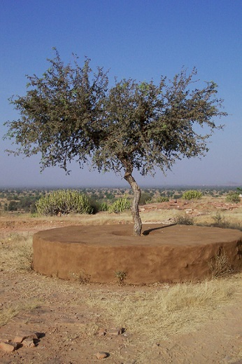
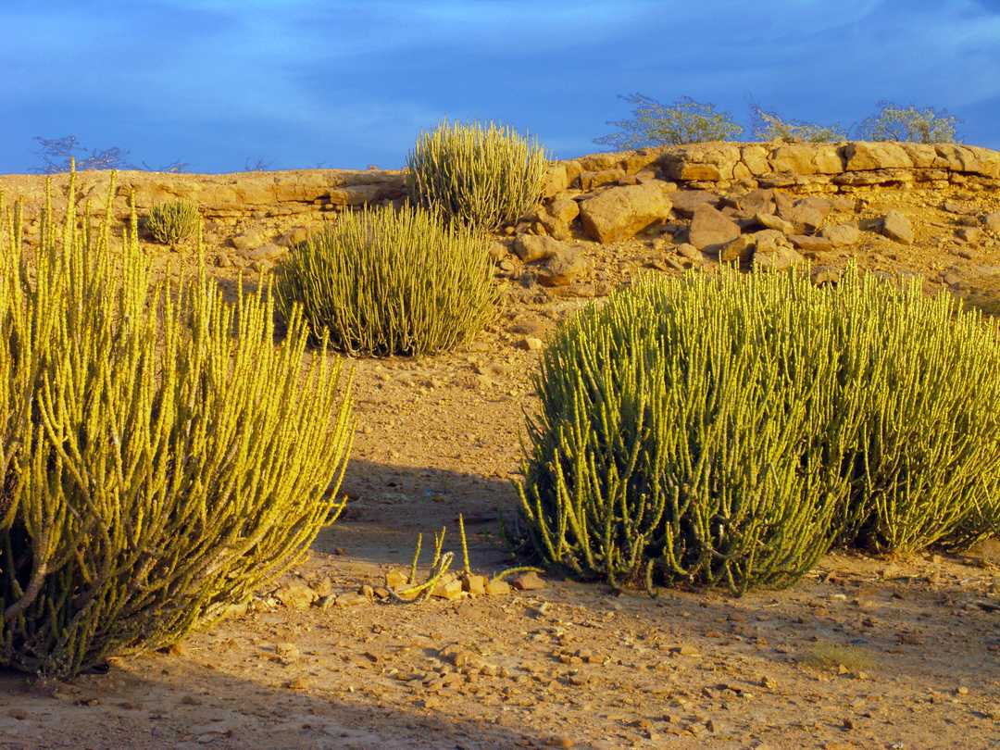
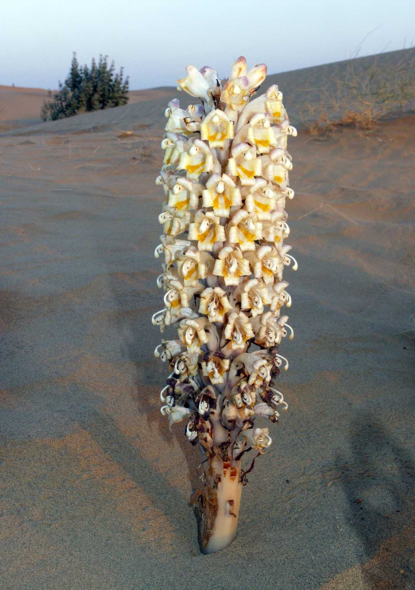

Thár-sivatag
A Thár-sivatag vagy Nagy-Indiai-sivatag (hindi: थार मरुस्थल, rádzsasztáni: थार मरुधर, urdu: صحراےَ تھر) az
indiai szubkontinens északnyugati részén, Pakisztán és India határának két oldalán húzódik. Területe kb. 250
000 km². Hossza kb. 800 km, szélessége kb. 480 km.
A Thár-sivatag túlnyomó része az indiai Rádzsasztán állam területén fekszik, egy része átterjed Pakisztánra,
északon, keleten és délen pedig a szomszédos indiai államokra. Nyugaton az Indus völgye határolja, keleten az
Aravalli-hegység, észak-ÉNy-on a Szatledzs folyó, délen a gudzsaráti Kaccsh, amely részben sivatagos, részben
mocsaras táj. A Thár területének 10-20%-a homoksivatag, míg nagyobb része kő-, kavics-, agyagsivatag, itt-ott
bozóttal, kevés fával. Nagy területeket fed szeván-fű (Lasiurus scindicus), valamint mind szívós, kemény,
drótszerű, mind pedig pozsgás cserjék és elszórtan nőtt fák.
Az évi csapadékmennyiség helytől függően 100-250 mm, ami a monszun 2-3 hónapja alatt hullik le. A hőmérséklet
május-júniusban az 50 °C-ot is eléri.
Egyes helyeken a talajvíz sós, ezért öntözésre alkalmatlan, ennek ellenére egyes mélyedésekben, földteknőkben
szegényes búzatermést takarítanak be. A bozótos és füves dűnéken marha- és kecskenyájakat legeltetnek.
A sivatag több vadállatának különleges képessége van, hogy megőrizze a vizet. A kulán (vadszamár) vizet
tartalékol a testében és nagymértékű vízvesztést is képes túlélni. A chinkarai gazella ívóvíz nélkül is képes
élni úgy, hogy az anyagcsere folyamán a táplálékból vizet állít elő. Nagyszámú madár- rovar-, továbbá
emlősfajok is (rókák, sakálok) élnek itt.
A kutatók szerint a régió Kr. e. 2000 és Kr. e. 1500 között kezdett elsivatagosodni, és mai formájában Kr. e.
1300 és Kr. e. 900 között alakult ki.
| 
Khejari
|

Organ Euphorbia
|

Parasitic Broomrape
|